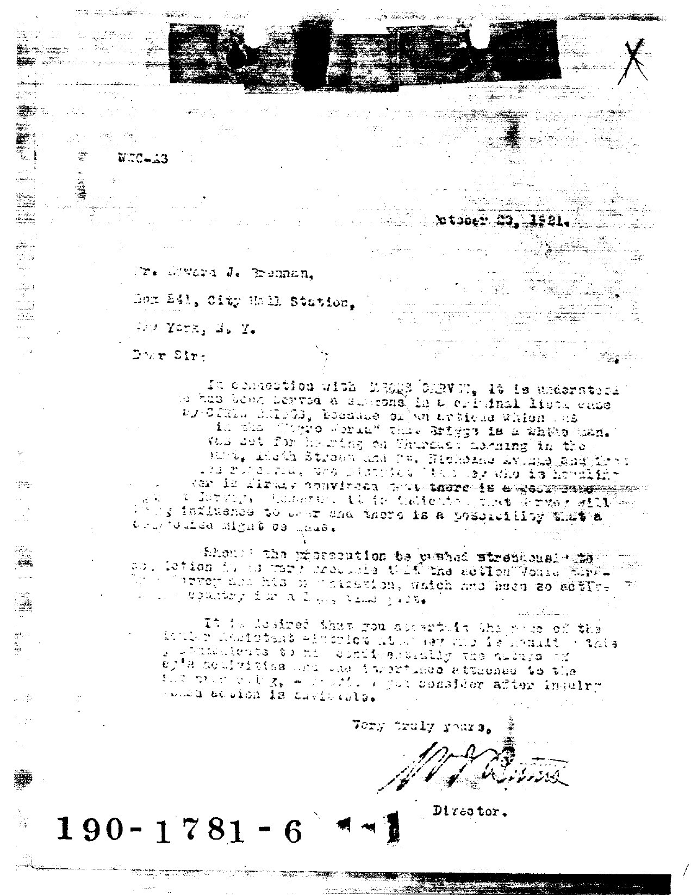

Click anywhere to enable audio · The scene requires sound
★ Juneteenth 2026 · Sunday Closing Ritual ★
The Voyage
A preview of The Marcus Garvey Living Archive.
The source is the form. Click to begin.
▸ Enter
★ New York · Autumn 1919 ★
The S.S. Yarmouth, first ship of the Black Star Line, departs
★ UNIA Parade · Harlem · c. 1920 ★
Photograph · provenance pending · candidate archives: Schomburg Photographs & Prints Division / Library of Congress
Bureau of Investigation · Division Five190-1781-6
✻ Reconstruction ✻
Composite of period Bureau voice · not a single document
Tap panel for the actual 1921 Hoover letter
Confidential

★ The actual file ★
J. Edgar Hoover · October 23, 1921 · File 190-1781-6 · Public domain
Atlanta Federal Penitentiary · February 1925
— Marcus
First Message to the Negroes of the World from Atlanta Prison · Feb. 10, 1925
from Philosophy and Opinions of Marcus Garvey, Vol. II
Amy Jacques Garvey, ed. (1925) · public domain
★ His Voice ★
1921 phonograph
★ Marcus Garvey · 1921 phonograph · transcript via WikisourceFellow citizens of Africa, I greet you…
Esc to exit · Space to pause
The voyage departs in '27.
Grab your ticket.
SS Yarmouth · renamed SS Frederick Douglass by the BSL · 1919–1922
Photograph · T.H. Franklin / SSHSA collection, University of Baltimore Library · via Watson, Steamboat Bill